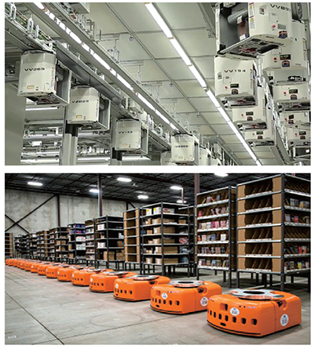
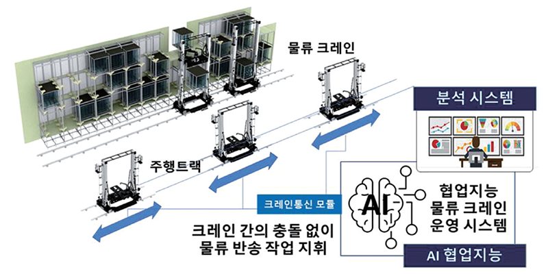

연구성과 10선
연구성과 10선
KAIST RESEARCH ACHIEVEMENTS
AI기반 자동물류 스마트
팩토리 솔루션
산업및시스템공학과 장영재
요약
반도체/LCD와 같은 첨단 제조 시설과 신속배송을 처리하는 첨단물류 창고에서 자동화와 무인화는 필수요소로 자리매김하고 있다. 이러한 첨단 제조 및 물류 창고는 과거 컨베이어가 아닌 수 백대에 이르는 물류 로봇이 물류 이송 작업을 수행한다. 이러한 물류 배송 로봇들이 사 람 과 유사하게 서로 충돌을 일으키지 않고 상호 효율적으로 작업을 수행하기 위해서는, 개별 로봇의 성능 향상뿐만 아니라 높은 수준의 AI를 기반으로 다수의 로봇을 지휘하는 협업지능(Collaborative Intelligence) 기술이 필수적이다. 본 연구에서는 AI의 대표 기술 중 하나인 강화학습(Reinforcement learning) 기반의 자동 물류 군집 로봇 제어 알고리즘을 개발하였다. 본 알고리즘은 다량의 자동 물류 로봇이 제한된 자원을 공유하는 환경에서 상호 협업하여 작업을 수행할 수 있는 두뇌 역할을 담당한다. 본 연구진은 인공신경망, 강화학습, 디지털 트윈과 자동 물류 로봇 시스템 도메인 지식을 결합하여 대규모 물류 로봇의 복잡한 제어/관리 문제를 해결하였으며, 1,000대 이상의 물류 로봇 군집 제어 솔루션 상용화에 성공하였다. 기존 학계 벤치마킹 알고리즘과 산업 현장에서 기존 활용 중인 방법과 비교해 물류 성능의 30%이상 개선을 확인하였으며[1], 또한 국내 중견기업과 협업을 통해 솔루션 상용화에도 성공하였다[2]. 본 연구는 “산업 AI”의 성공적인 구현사례로, 강화학습 기술의 저변을 확장하여 AI의 성공적인 산업 현장적용을 선도할 것으로 예상된다. 또한 다수의 물류 로봇이 동시에 작업을 진행하는 물류 창고, 교통, 서비스 분야로의 확장이 기대된다.
연구배경
제조 산업 현장에서 제품이나 가공품의 장비간 이송을 물류 로봇이 담당하고 있으며 대부분 2대 이상의 군집으로 작업을 수행하고 있다. 특히 반도체와 같은 첨단 제조 시스템이나 물류 창고에서는 그림1과 같이 수백대 이상의 물류 로봇이 이송을 담당하고 있으며, 이에 대한 군집 제어를 요구하고 있다. 하지만 산업 현장에서는 이러한 로봇들 간 상호작용을 예측하는 것은 상당한 기술적 고도화가 요구되어, 단순한 규칙 기반으로 운영하되 사전 예상하지 못한 상황이 발생하면 사람이 인위적으로 개입하여 임의적인 규칙을 적용하는 비효율적인 방식으로 운영되었다.
마치 시시각각 변화하는 교통상황에서 예상하지 못한 교통 정체가 발생하면 사람이 인위적으로 개입하여 교통신호를 수동으로 제어하는 것 과 비슷한 방식이로 운영되었다. 이러한 군집으로 운영되는 물류 로봇을 효율적으로 제어하기 위해 개별 로봇의 성능 향상뿐만 아니라 상호 효율적으로 작업을 수행하기 위해 협업지능(Collaborative Intelligence) 기술이 필요하다.
 그림 1. 반도체 공장 물류반송 로봇 (상), 자동 물류창고 물류반송 로봇 (하)
연구내용
본 연구에서는 (1)반도체 및 (2)디스플레이 공장에서 다수의 물류 로봇들이 상호 협업할 수 있도록 강화학습 및 디지털 트윈 기술을 이용하여 로봇들의 물류 처리 작업할당 및 이동 경로를 결정하는 알고리즘을 개발하였다.
[반도체 공장 적용 연구] 최근 반도체 산업 현장에서는 1,000대 이상의 물류 로봇이 동시에 이송작업을 수행하고 있으며, 빈번하게 상호간섭이 발생하고 있다. 제안 알고리즘은 기존 학계와 산업계의 표준 방식으로 사용되는 벤치마크 알고리즘에 비해 2배에 달하는 우수한 성능을 보임을 실증적으로 입증 하였다 (유튜브 동영상: https:// [www.youtube.com/watch?v=r-WUwqYMD-M](http://www.youtube.com/watch?v=r-WUwqYMD-M) ). 또한 벤치마크 알고리즘은 경로를 탐색할 때마다 최단 경로 연산을 수행하여 CPU의 과부하가 발생하지만, 제안 알고리즘은 학습된 상태-행동 함수와 메모리를 활용을 통해 CPU 부하를 줄여 대량 군집 제어에 효과적이다. 또한 디지털 트윈을 활용해 학습 속도를 개선하고 로봇들의 군집 움직임의 패턴을 파악해 사전 로봇들의 이상징후를 파악하는 알고리즘도 개발하였다. 기존 방식에 대비 탁월한 기능 뿐만 아닌, 사람의 개입이 없이도 스스로 지능화 하여 문제를 인지하고 수정하는 자율운영(autonomous)의 혁신을 제시하였다.
 그림 2. LCD/OLED 디스플레이 물류반송 로봇
[디스플레이 공장 적용 연구] 그림 2와 같이 디스플레이 제조 공장에서 사용되는 물류 로봇은 일반적으로 복수의 크레인 로봇이 하나의 레일 위에서 움직임으로 충돌을 방지하는 물류 로봇 간 이동 경로 설정이 최대 관건이다. 본 연구에서는 강화 학습과 인공신경망을 결합한 Deep Q Network를 활용하여 실시간으로 각 로봇들의 작업 할당 및 이동 경로를 설정하는 알고리즘을 개발 하였다. 국내 글로벌 LCD제조 업체의 제조 설비에 실제 적용하여 20%이상 성능 효과가 보임을 실증 사업을 통해 증명하였으며 성공적인 사업화를 완료 하였다.
기대효과
본 연구는 AI기술을 활용한 스마트팩토리 솔루션의 성공 사례로, AI 강화학습 기법을 통해 단순한 규칙에 의존하던 ‘룰 (rule) 기반’ 낮은 지능의 물류 로봇를 높은 수준의 협업 지능을 가진 물류 로봇으로 탈바꿈하는 기술을 개발하였으며, 이러한 기술을 통해 물류의 생산성을 혁신적으로 개선 가능함을 실증 사업으로 증명하였다. 연구 결과를 토대로 2018년 국내 반도체 장비 제조사인 ㈜시너스텍과 함께 20억원 규모의 AI 자동화 시스템 연구센터 설립, 같은해 ㈜LGCNS와 함께 20억원 규모의 AI & 빅데이터 연구센터를 추가 설립하여 활발한 기술 사업화를 추진하고 있으며, 2019년에는 관련 기술로 총 1억원의 기술료 수입을 달성하였다. 본 연구는 "제조 산업 AI”의 구체적인 사례를 제시하였으며, 강화학습 기술의 산업 활용 저변을 확장하고 향후 다양한 제조 산업 AI 연구의 기준이 될 것으로 기대된다. 또한, 강화학습 기반 물류 흐름 제어 프레임워크는 다수의 물류 로봇이 상호작용하는 환경에서 전체 시스템 성능 최대화를 목표로 로봇 군집을 최적 운영하는 기술로, 물류 로봇을 활용하는 물류창고, 교통, 서비스 로봇등 다양한 산업 분야로 확장이 기대된다.
연구성과
[논문] Hwang, Illhoe, and Young Jae Jang. "Q (λ) learning-based dynamic route guidance algorithm for overhead hoist transport systems in semiconductor fabs." International Journal of Production Research (2019): 1-23. (저널 에디터 초청 게재 - Editor’s Pick)
[기술이전 1] 기술 사업화-자동물류 반송 시스템 스케줄링 알고리즘 및 3건 - 총 기술료 1억원 (2019)
[기술이전 2] 신성-카이스트 자동화 시스템 연구센터 설립 (2018) - 총 연구비 20억원, LG CNS AI & Big Data 연구센터 설립 (2028) - 총 연구비 20억원
연구비지원
한국연구재단, 일반연구자지원사업 (산학협력센터 설립)